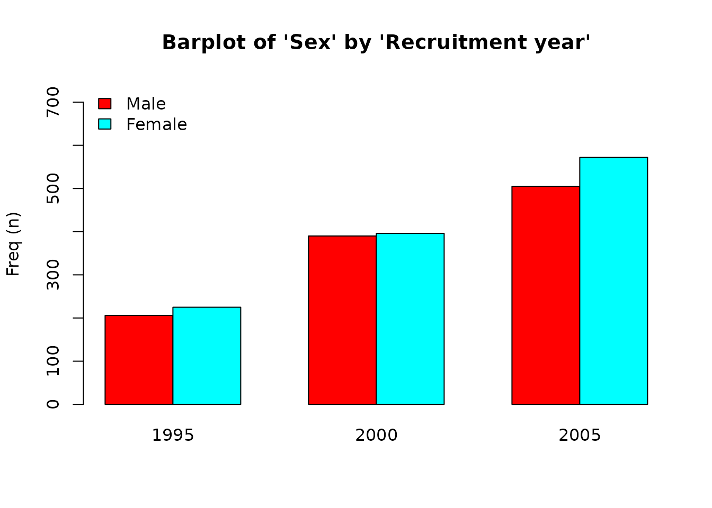
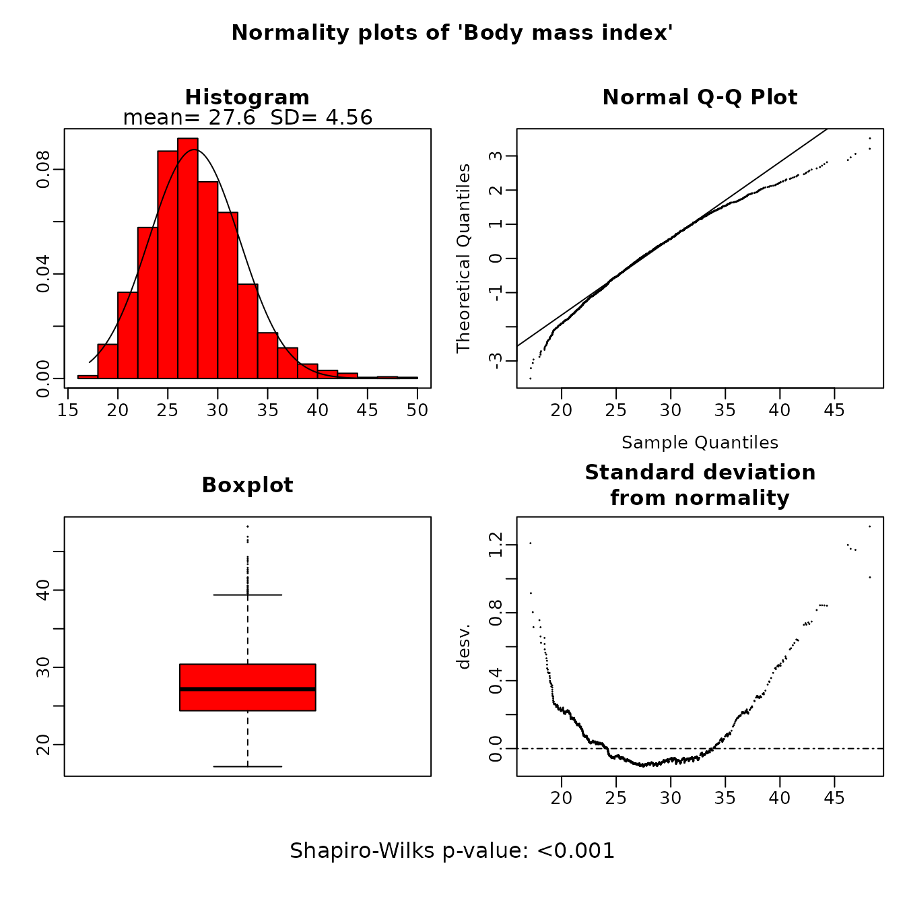
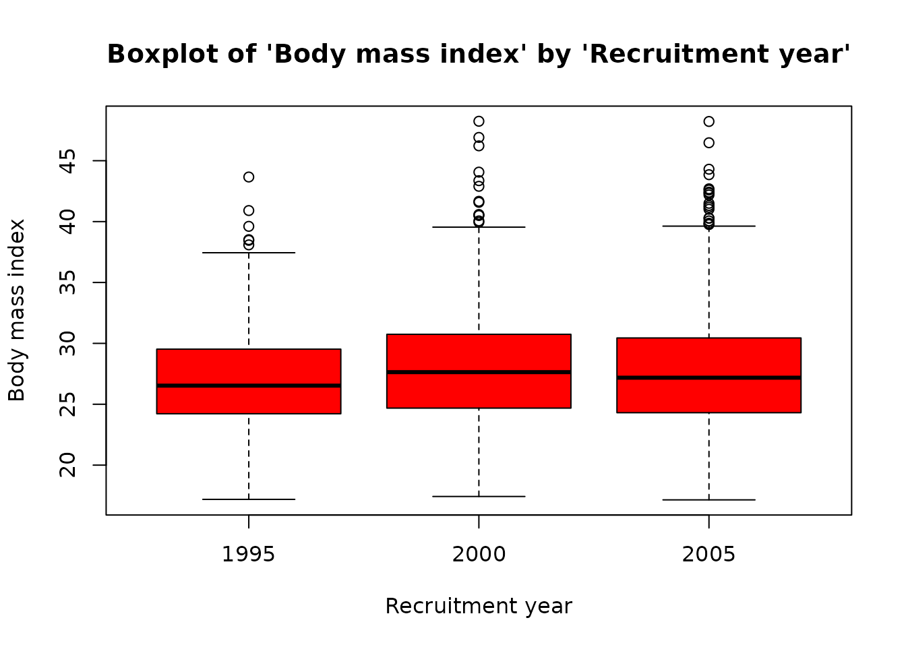

Example 2: Exploring your data graphically.
example2.RmdBarplots, boxplots or normality plots are displayed according to the nature of described variable. These plots are useful to explore visually whether a continuous variable follows a normal distribution or to identify possible outliers or rare categories, etc.
Step 1. Install the package
Install compareGroups package from CRAN
and then load it by typing:
install.packages("compareGroups")
library(compareGroups)Setp 3. Computations
First use compareGroups function to store all values
used to perform plots afterwards.
res <- compareGroups(year ~ . , data = regicor)You can use varinfo
function to recover the original name of variables (not labels which are
displayed in the results).
varinfo(res)
--- Analyzed variable names ----
Orig varname Shown varname
1 year Recruitment year
2 id Individual id
3 age Age
4 sex Sex
5 smoker Smoking status
6 sbp Systolic blood pressure
7 dbp Diastolic blood pressure
8 histhtn History of hypertension
9 txhtn Hypertension treatment
10 chol Total cholesterol
11 hdl HDL cholesterol
12 triglyc Triglycerides
13 ldl LDL cholesterol
14 histchol History of hyperchol.
15 txchol Cholesterol treatment
16 height Height (cm)
17 weight Weight (Kg)
18 bmi Body mass index
19 phyact Physical activity (Kcal/week)
20 pcs Physical component
21 mcs Mental component
22 cv Cardiovascular event
23 tocv Days to cardiovascular event or end of follow-up
24 death Overall death
25 todeath Days to overall death or end of follow-up Step 4. Perform plots
by using the plot method which takes the results created
by compareGroups function.
Inside “[” brackets you can select which variable to plot. And,
indicating bivar=TRUE a bivariate plot is performed,
i.e. stratifying by groups.
- For categorical variables a barplot is performed, stratifying by groups (right plot) or not (left plot):
plot(res['sex'])
plot(res['sex'], bivar=TRUE)
- For continuous variables boxplots or normality plots are performed depending whether groups are considered or not, respectively.
plot(res['bmi'])
plot(res['bmi'],bivar=TRUE)